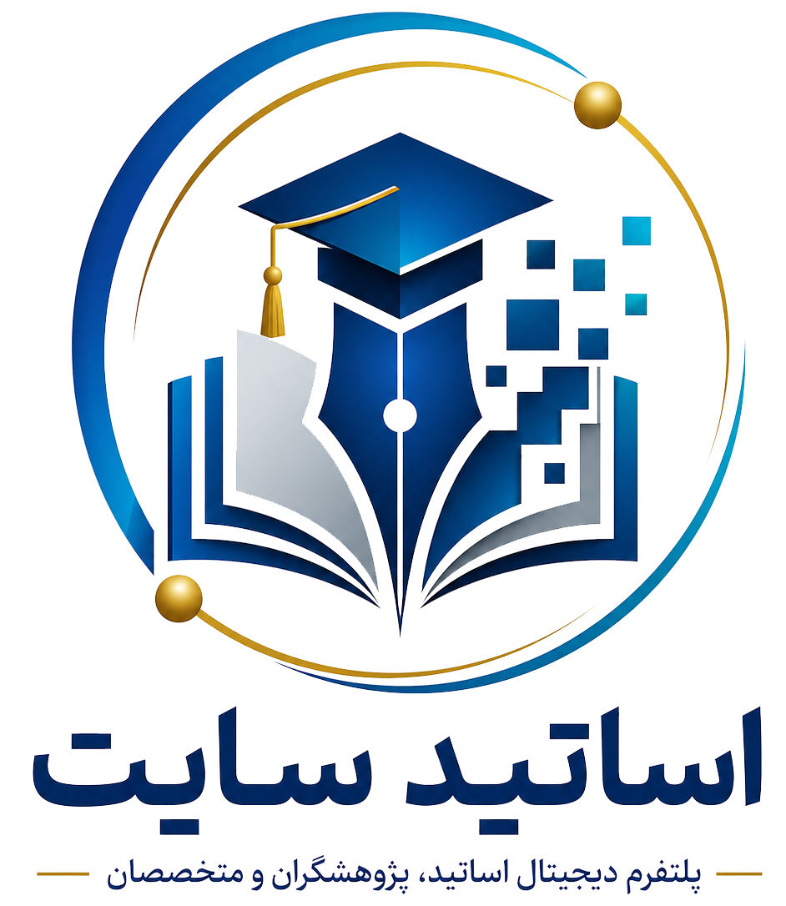

مشاوره و راهاندازی
تحلیل نیاز، طراحی معماری، تجربه کاربری، انتخاب فناوری و اجرای سامانههای تخصصی آموزشی.
مشاهده خدماتمرکز آموزش هم یک مجموعه تخصصی برای مشاوره، طراحی و راهاندازی سامانههای آموزشی است و هم یک پلتفرم مستقل برای ارائه تجربه یادگیری فردمحور، موبایلمحور و هوشمند.

مرجع سامانههای آموزشیاز تعریف مسئله و طراحی راهکار تا تجربه واقعی یادگیری، همهچیز در یک مسیر منسجم قرار میگیرد.
تحلیل نیاز، طراحی معماری، تجربه کاربری، انتخاب فناوری و اجرای سامانههای تخصصی آموزشی.
مشاهده خدماتمحیطی مستقل برای دوره، مسیر یادگیری، مدرس، ارزیابی، گواهی و مدیریت تجربه آموزشی.
معرفی پلتفرمهر کاربر بر اساس هدف، سطح، زمان و علایق خود مسیر آموزشی متفاوت و قابل سنجشی دریافت میکند.
شروع یادگیریاز کشف دوره تا ساخت مسیر، تمرین، ارزیابی، ارتباط با مدرس و دریافت اعتبار حرفهای.
راهکارها را بر اساس مخاطب، مدل آموزشی و سطح بلوغ دیجیتال طراحی میکنیم.
ارزیابی وضع موجود و طراحی نقشه راه تحول.
طراحی معماری اطلاعات، فنی و تجربه کاربر.
توصیهگر، دستیار، تحلیل یادگیری و اتوماسیون.
آکادمی سازمانی، مهارتسنجی و داشبورد مدیریتی.
راهاندازی و توسعه سامانههای مدیریت آموزش.
همراهی پس از راهاندازی و توسعه مرحلهای محصول.
مرکز آموزش برای نقشهای مختلف، تجربه و ابزار متناسب ارائه میکند.
برای طراحی یک سامانه، آکادمی یا تجربه یادگیری هوشمند با تیم مرکز آموزش مشورت کنید.